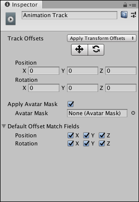

Animation track properties¶
Use the Inspector window to change the name of an Animation track, set how track offsets are applied, apply an avatar mask, and set which transforms are modified by default when you match clip offsets.

Inspector window when selecting an Animation track in the Timeline window
Property |
Description |
|
|---|---|---|
Display Name |
The name of the Animation track shown in the Timeline window and in the Playable Director component. The Display Name applies to the Timeline Asset and all of its Timeline instances. |
|
Track Offsets |
Applies a position and rotation offset to the start of each Animation clip on the selected Animation track. The position and rotation offset starts from a specific position and rotation or from the position and rotation relative to a state machine or another Timeline instance. |
|
Apply Transform Offsets |
Starts the animation in each Animation clip from a specific position and rotation offset. Use the Move and Rotate tools, and the Position and Rotation fields, to set the starting position and rotation. |
|
Apply Scene Offsets |
Starts the animated GameObject from its current position and rotation in the Scene. Use this mode to build a Timeline instance that transitions to and from a state machine or to and from another Timeline instance. |
|
Auto (deprecated) |
If you load a Scene or Project that was built before 2018.3, Track Offsets is automatically set to Auto (deprecated). This is a special mode for backwards compatibility. |
|
Move tool |
Enable the Move tool to show the Move Gizmo in the Scene view. Use the Move Gizmo to visually position the transform offset. Positioning the Move Gizmo changes the Position properties. |
|
Rotate tool |
Enable the Rotate tool to show the Rotate Gizmo in the Scene view. Use the Rotate Gizmo to visually rotate the track offset. Rotating the Rotate Gizmo changes the Rotation properties. |
|
Position |
Sets the track position offset in X, Y, and Z coordinates. The Position fields only appears when Track Offsets is set to Apply Transform Offsets. |
|
Rotation |
Sets the track rotation offset in X, Y, and Z coordinates. The Rotation fields appear when Track Offsets is set to Apply Transform Offsets. |
|
Apply Avatar Mask |
Enables Avatar masking. When enabled, Timeline applies the animation of all Animation clips on the track based on the selected Avatar Mask. |
|
Avatar Mask |
Selects the Avatar Mask applied to all Animation clips on the Animation track. |
|
Default Offset Match Fields |
Expand to display a series of checkboxes that choose which transforms are matched when matching clip offsets between Animation clips. |